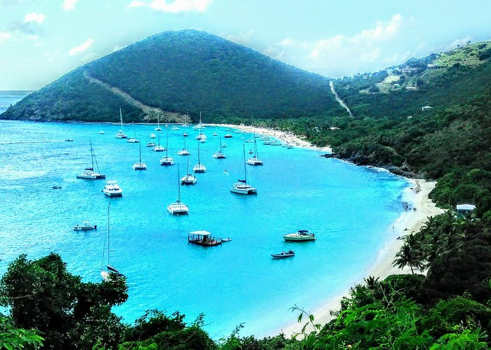
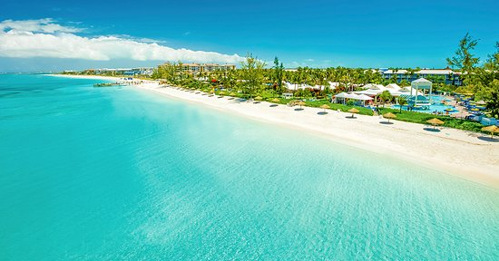
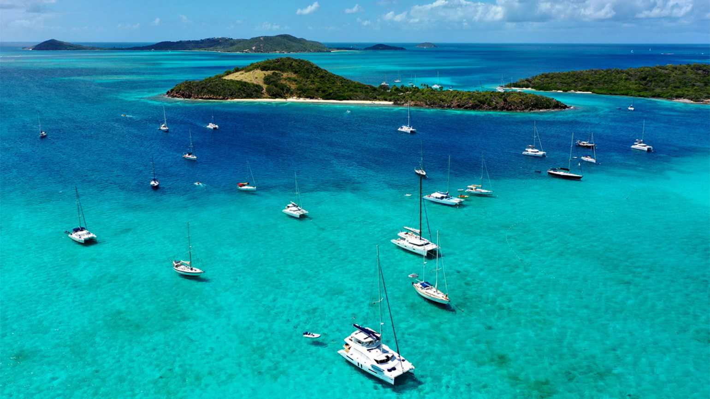

Carribean Islands-The Top 3
British Virgin Islands
"Posh" is the best word to describe the British Virgin Islands. The island country's beautiful coast sets it apart from other Caribbean destinations. The shoreline at Cane Garden Bay and the white sand beaches on Anegada island are stunning, and the boulders and sea pools at The Baths National Park are mystifying. One of the best ways to see these scenic islands is by yacht or on a boat tour from the nearby U.S. Virgin Islands. You can also choose to relax in one of the islands' upscale hotels.
Turks & Caicos
Travel to the Turks and Caicos Islands to see some of the most beautiful beaches in the Caribbean, including Grace Bay. Home to one of the largest barrier reef systems in the world, this collection of coral islands also offers unforgettable experiences for snorkelers and scuba divers. Whether you choose to spend the bulk of your time on land or underwater, these islands make a wonderful retreat for those seeking maximum comfort in a tropical setting, though hotel prices can be higher here than in other Caribbean locales, especially during the peak winter season.
St. Vincent & The Grenadines
St. Vincent and the Grenadines has something to offer every traveler. Enjoy time on the biggest island of St. Vincent in its capital and port city, Kingstown, where you'll find a lush botanical garden and fresh fish and produce markets. Then, hop on a boat and sail between the many other remote landmasses for diving, snorkeling, golfing, sunbathing and photo-ops. No matter how you choose to pass the time, a trip to this destination will be one for the books.